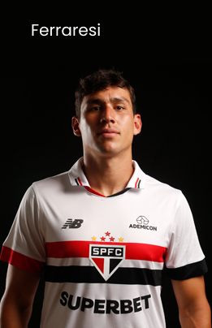
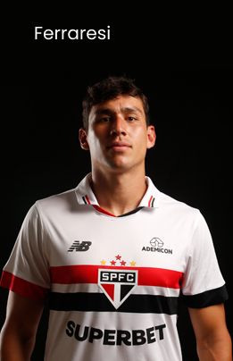

Campeonatos Atuais
Brasileirão
Brasileirão
O torneio segue o formato de pontos corridos, onde os times se enfrentam em turno e returno ao longo de várias rodadas. O time que acumula mais pontos ao final do campeonato é consagrado campeão brasileiro.
Copa do Brasil
Copa do Brasil
Consiste em eliminatórias, onde os times se enfrentam em partidas de ida e volta. Uma característica marcante da Copa do Brasil é a possibilidade de times de divisões inferiores enfrentarem equipes de elite.

Libertadores
Libertadores
A competição reúne os melhores clubes dos países sul-americanos. O formato da Libertadores envolve fases de grupos seguidas por mata-matas. O campeão da Libertadores garante vaga no Mundial de Clubes da FIFA


 
